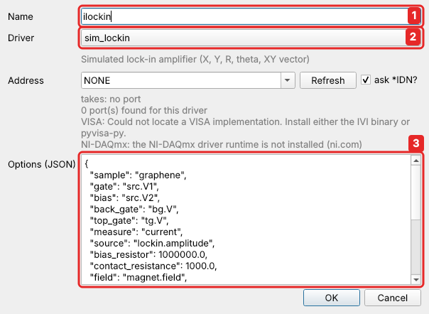
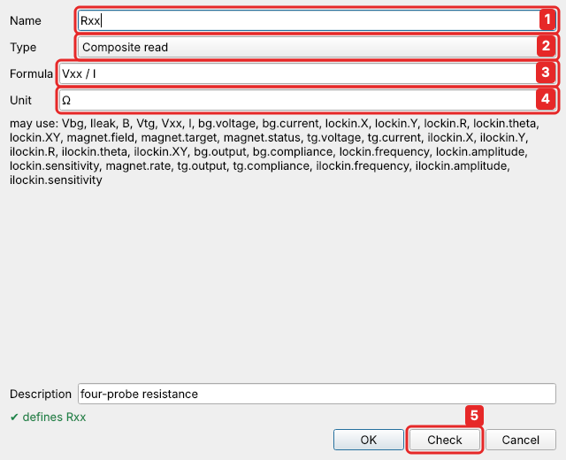
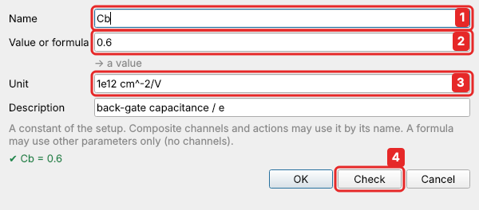
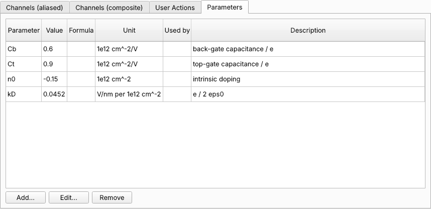
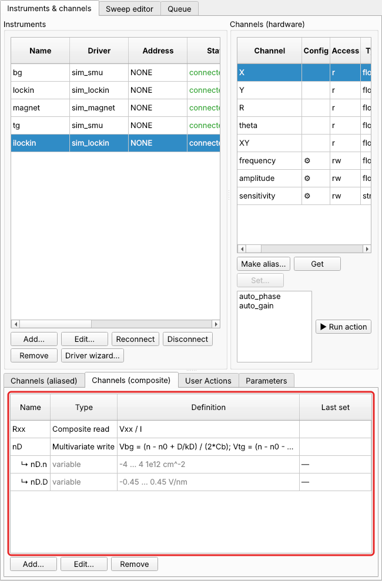
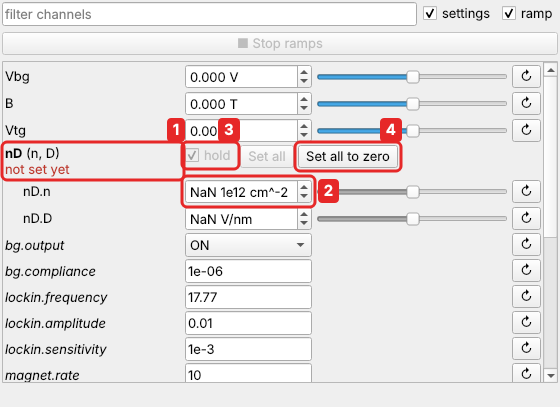
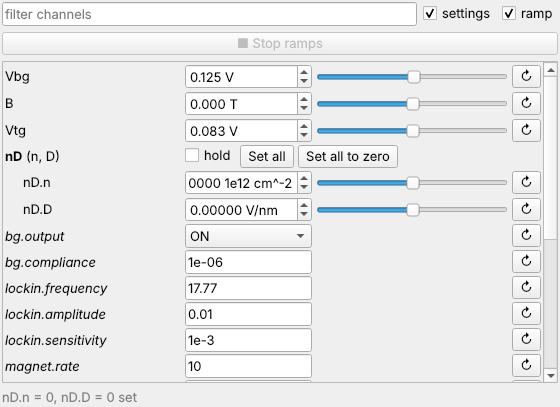
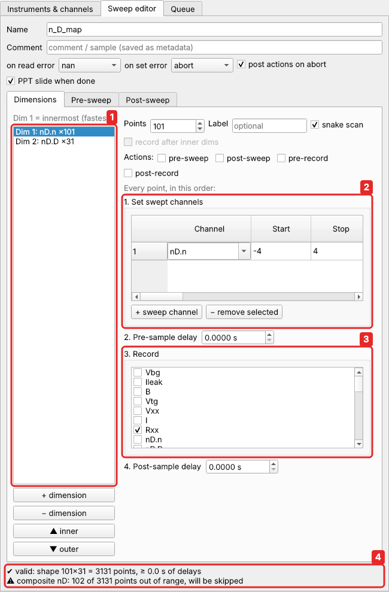
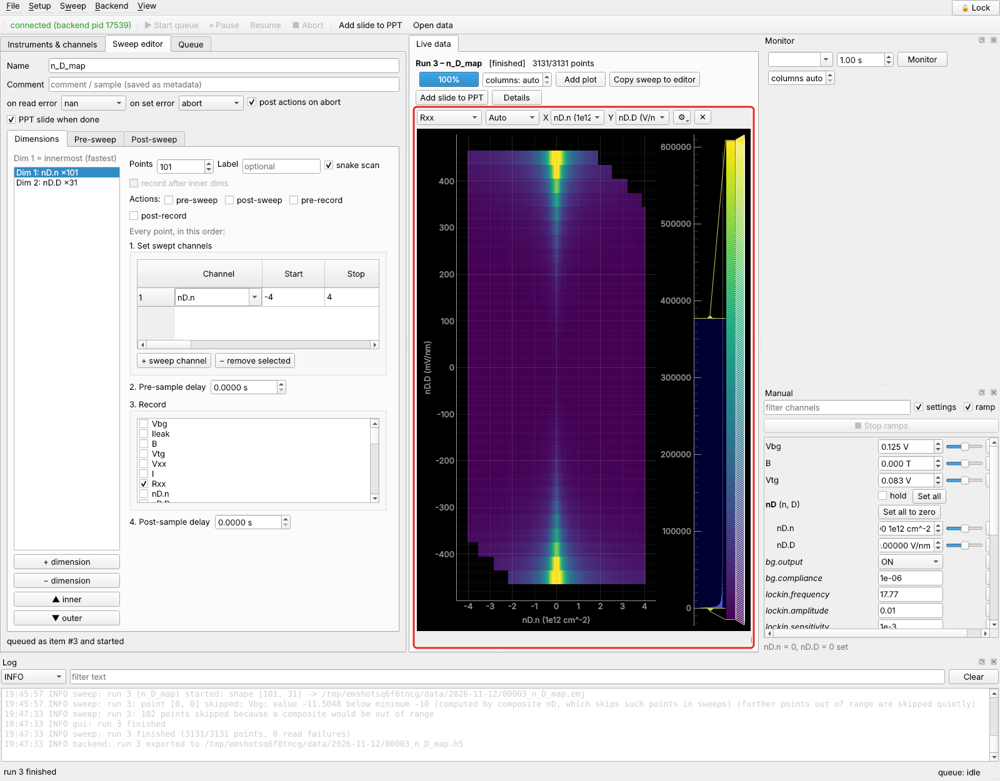

Tutorial 2: rotated gate sweeps with composite channels¶
You will learn: composite channels. A composite read computes a channel from others (\(R_{xx} = V_{xx}/I\) from two lock-ins). A multivariate write lets you sweep physical quantities (density and displacement field) instead of instrument voltages. You will also see what happens to points that would need a gate voltage beyond its limit.
The physics. Your bilayer graphene has a top gate too. The two gates together set two physical quantities:
- the carrier density \(n = (C_b V_{bg} + C_t V_{tg})/e + n_0\);
- the displacement field \(D = (C_b V_{bg} - C_t V_{tg})/2\varepsilon_0\), which opens a band gap in bilayer graphene.
To see the gap open, you want to sweep \(n\) at fixed \(D\), then step \(D\). In the \((V_{bg}, V_{tg})\) plane these are lines at an angle, a rotated sweep: both gates move at every point. easyMeasure does this with a composite channel. You define \(n\) and \(D\) as channels of their own, give the formulas for the gate voltages, and then sweep \(n\) and \(D\) like any other channel.
For this device, \(C_b/e = 0.6\) and \(C_t/e = 0.9 \times 10^{12}\,\text{cm}^{-2}\,\text{V}^{-1}\), \(n_0 = -0.15 \times 10^{12}\,\text{cm}^{-2}\), and \(e/2\varepsilon_0 = 0.0452\) V/nm per \(10^{12}\,\text{cm}^{-2}\). Solving the two equations for the gate voltages (\(n\) in \(10^{12}\,\text{cm}^{-2}\), \(D\) in V/nm):
1. The top gate¶
Add a second sim_smu named tg (address NONE). Make an alias of tg.voltage
named Vtg, with limits −10 … 10 V and ramp rate 5 V/s, exactly like Vbg
(Quick start, step 4).
2. Measure the current too: Rxx = Vxx / I¶
So far, Rxx was the lock-in voltage × 10⁸, which assumes that exactly 10 nA flows.
The current is set by the lock-in's 10 mV output and a 1 MΩ series resistor. That
is fine while the sample has a few kΩ. But once the gap opens, the sample reaches
hundreds of kΩ, the current drops, and \(V_{xx}/10\,\text{nA}\) underestimates \(R_{xx}\).
The usual remedy is to measure the current with a second lock-in, locked to the
first one's reference, and divide.
The second lock-in. Instruments → Add…: name ilockin, driver sim_lockin,
address NONE. In the lab this is a second SR830 measuring with its current input.
The simulation needs to know that it measures the current, driven by the first
lock-in's output:

- Name
ilockin. - Driver
sim_lockin. - Options:
"sample": "graphene","measure": "current","source": "lockin.amplitude".
Two aliases. Make an alias of lockin.X named Vxx (unit V), and one of
ilockin.X named I (unit A).
Rxx as a composite read. On the Channels (aliased) tab, select the old alias Rxx
and click Remove. Then, on the Channels (composite) tab, click Add…:

- Name
Rxx, the same name as before, so every sweep that recordsRxxkeeps working. - Type: Composite read, a read-only channel computed from others.
- Formula:
Vxx / I. Any formula of channels works:1/Rxxfor a conductance,(V1 - V2)/Ifor a voltage measured as a difference, and so on. - Unit: Ω.
- Check, then OK.
Reading Rxx now reads Vxx and I and divides. It can be recorded, monitored and
plotted like any channel. In the gap, at \(D = 0.3\) V/nm, it reads about a third more than
the old alias did, because only about 7.5 nA flow there.
3. The device's constants as parameters¶
The formulas for the gates contain four numbers that belong to this particular device: the two capacitances, the intrinsic doping and \(e/2\varepsilon_0\). Rather than typing them into formulas, give each a name as a parameter. When you cool down the next device, or calibrate the capacitances better from a Landau fan, you change the number in one place.
In Instruments & channels, on the Parameters tab, click Add…:

- Name
Cb. - Value or formula:
0.6. A number is a value; the line below says so. - Unit
1e12 cm^-2/V(and a description, if you like). - Check shows
✔ Cb = 0.6; OK checks again and saves it.
Add the others the same way:
| Name | Value | Unit | Description |
|---|---|---|---|
Cb |
0.6 | 1e12 cm^-2/V | back-gate capacitance / e |
Ct |
0.9 | 1e12 cm^-2/V | top-gate capacitance / e |
n0 |
-0.15 | 1e12 cm^-2 | intrinsic doping |
kD |
0.0452 | V/nm per 1e12 cm^-2 | e / 2ε₀ |

A parameter can also be a formula of other parameters: type Ct/Cb instead of a
number. Parameters are constants: they can be changed here or in the Manual panel,
but never by a sweep or a script. Every data file records their values. See
Parameters.
4. The composite channel n, D¶
On the Channels (composite) tab, click Add… again:

- Name
nD; Type: Multivariate write. You set variables, and the hardware follows. -
Variables: one row each, using Add variable.
Name Min Max Unit Description n-4 4 1e12 cm^-2 carrier density D-0.45 0.45 V/nm displacement field Each variable gets its own limits, unit and, optionally, a ramp rate. Outside this editor, a variable is called after its composite:
nD.nandnD.D. 3. Targets: one line per gate,channel = formula of the variables(and of parameters):This is the pair of equations above, written with the parameters. Here, inside the composite, the variables go by their short names
nandD. -
Out of range: what to do with a combination of
nandDthat would need a gate voltage beyond its ±10 V limit. Leave it at Skip the point (see below). - Check asks the backend whether everything is right without saving anything:
the names, the formulas, and that the targets exist and can be set. It answers
✔ defines nD.n, nD.D. OK checks again before it saves.
OK, and the composite appears in the table next to Rxx, with a row for each of
its variables below it, ↳ nD.n and ↳ nD.D, by the names you use from now on:

nD.n and nD.D are now channels like Vbg: you can set them, sweep them and record them.
Whenever one of them is set:
- both gate voltages are computed;
- everything is checked against all limits: the limits of
nD.nandnD.D, and also the ±10 V ofVbgandVtg; - both gates then ramp together, each within its own ramp rate.
5. Set n and D by hand¶
The Manual panel now has a group nD, with n and D (short for nD.n and
nD.D) indented below it.
Neither has been set yet, so neither has a value. Setting n alone would need a
value of D to compute the gates, and there is none. The panel shows this:

- The group header of the composite
nD, marked not set yet. nandDshow NaN, and their sliders are greyed out.- hold is ticked, and stays ticked until both have been set: whatever you type is held (blue), not sent.
- Set all to zero:
nandDare set to 0 together, and both gates move there.
Click Set all to zero. Alternatively, type a value into n and one into D, then
click Set all, which lights up once neither shows NaN.

Now the group works like any other channel: hold unticks itself, the sliders work, and you can change either variable alone; the other keeps its value.
To set both to other values at once, tick hold, type the values, and click Set all: the changes are collected and sent together.
6. Sweep n and D¶
In the Sweep editor, sweep the variables:

- Two dimensions.
- Dimension 1:
nD.nfrom −4 to 4 in 101 points, snake scan. Dimension 2:nD.Dfrom −0.45 to 0.45 in 31 points. - Record
Rxx. - Sweep → Validate computes all 3131 combinations, converts each to gate voltages and checks them. Some of them are out of range: at large \(n\) and \(D\) of the same sign, \(V_{bg}\) would have to exceed 10 V. Validation says how many points will be skipped.
This sweep is examples/graphene_nD.json.
Out-of-range points. Usually the rectangle you want in \((n, D)\) doesn't fit in the square the gates allow. The composite's Out of range setting decides what happens to the corners:
| Out of range | in a sweep | set by hand or from a script |
|---|---|---|
| Skip the point (default) | the point is skipped before anything is set: no gate moves, its data stay empty | refused, with the reason |
| Error | the sweep does not start; validation names the first bad point | refused |
| Clamp to the limit | the gate stops at its limit; the point is measured, but not at the \((n, D)\) it is labelled with | the gate stops at its limit |
For \(n\)–\(D\) maps, Skip is what you want: you get the whole region the gates can reach, and an empty corner where they can't. Error is for when every point must be measured. Clamp suits cases where running into the limit is harmless and the nearest reachable value is good enough.
nD.n is swept in dimension 1 and nD.D in dimension 2, but the gates never see one
without the other. At every point, n and D are set together, so a new value of
D doesn't move the gates with the old n from the end of the previous line.
7. The result¶

At \(n = 0\) the resistance grows steeply with \(|D|\): the band gap of bilayer graphene opening in a displacement field. The two empty corners are the skipped points, where \(V_{bg}\) would have exceeded 10 V. The same measurement plotted against \(V_{bg}\) and \(V_{tg}\) would show the same feature along a tilted line.
Sweeping two things in one dimension
You can also put both nD.n and nD.D in the same dimension, e.g. nD.n from
−2 to 2 and nD.D from −0.3 to 0.3 together. That is a diagonal cut through the \((n, D)\)
plane. Variables of one composite swept in the same dimension are set together at
every point. With a formula for each, the path can be any curve, such as a circle
around \(n = D = 0\): see Custom sweeps.
Other kinds of composite channel¶
| type | what it does | example |
|---|---|---|
| Multivariate write | variables of your choice drive hardware channels through formulas | \(n, D\) → \(V_{bg}, V_{tg}\); detuning ε and energy U of a double dot |
| Composite read | a read-only formula of other channels | \(R_{xx} = V_{xx}/I\); conductance 1/Rxx; a sum of two signals |
| Simple mapping | a one-to-one view of one channel, with formulas both ways (checked to be each other's inverse) | a field in mT on a supply in A; a temperature in °C on a controller in K |
Formulas can be piecewise: piecewise(x < 0, -x, 2*x), a if c else b, interp(x,
[...], [...]). Composite channels can also build on each other. See
Composite channels for everything.
What you learned¶
- A composite read computes a channel from others, such as \(R_{xx} = V_{xx}/I\) from two lock-ins. It is read, recorded and plotted like any channel.
- Parameters name the constants of a device (capacitances, doping), so formulas stay readable and a new calibration is one change.
- A multivariate composite turns physical quantities (\(n\), \(D\)) into the voltages of several instruments. You sweep the physics; easyMeasure moves the hardware.
- Every point is checked against the limits of the variables and of every gate. With Out of range: Skip, points the gates can't reach are left out of the map.
- New variables show NaN until they are first set together: start with Set all to zero, then set either variable alone.